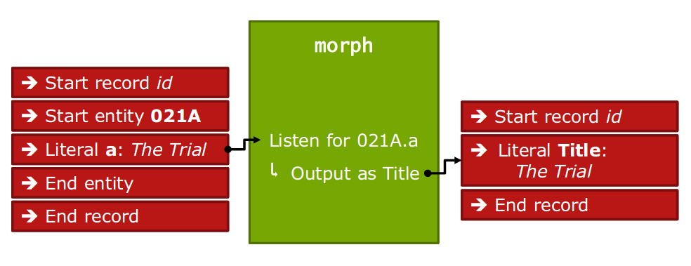

Metafacture-Workshop
Linked
Open Data, Hochschulbibliothekszentrum NRW (hbz)

hbz, Köln, 2019-03-14
This presentation:
http://slides.lobid.org/metafacture-workshop/
Agenda
- Introduction
- Metafacture concepts
- Metafacture usage
- Exercises
- Specific issues
- Outlook
Introduction
What we do
Lobid (linking open bibliographic data), hbz linked data service, web APIs and search UIs for title and authority data
Based on lobid: regional bibliograph for NRW
Transformation of source data to JSON-LD with Metafacture
Open source development on GitHub (products and tools)
This workshop
Origin: request by colleagues who are considering to switch from an experimental, project-based tool to Metafacture
Metafacture: on GitHub since 2013, used at DNB, swissbib.ch, lobid.org, and others
Versatile: usable as command line tool, Java library, batch processing, on-the-fly
An open, common framework to avoid re-building things needed in the library world (individual modules, complete workflows)
Metafacture concepts
Metafacture
Toolkit for metadata analysis and transformation
Basic idea: data streams through multiple modules (read, decode, transform, encode, write)
Each module reads data of a specific type, writes data of a specific type
Various formats supported (MAB, MARC, METS, etc.), extensible framework (Java)
Workflow

Source: Christoph Böhme, http://swib.org/swib13/slides/boehme_swib13_131.pdf
Metamorph
Stream module for metadata transformation/mapping
Within the morph stream module: mapping separated from input or output format: attribute-value-pair → attribute-value-pair (rules externalized in morph file, XML)
Metamorph
Source: Christoph Böhme, http://swib.org/swib13/slides/boehme_swib13_131.pdf
Workflows
Individual stream modules comprise the overall workflow
Workflow can be expressed with Flux, a simple DSL, or with Java
Flux workflows can be edited in any text editor and executed on the command line
We provide an Eclipse-based IDE to edit and run workflows
Metafacture usage
https://github.com/metafacture/metafacture-core#metafacture-as-a-stand-alone-application
Exercises
Exercise 1: Printing data
Output the content of bib-data.pica.gz as Formeta
default in = FLUX_DIR + "bib-data.pica.gz";
default out = FLUX_DIR + "sample1-out.txt";
in
|open-file
|as-lines
|decode-pica
|encode-formeta(style="multiline")
|write(out);
https://github.com/hbz/metafacture-flux-examples/tree/master/sample1
Exercise 2: Logging
log-stream and log-object to analyze mystery-script.flux
default in = FLUX_DIR + "input.foma.gz";
default out = FLUX_DIR + "sample2-out.txt";
in
|open-file
|as-lines
|log-object("Filtering: ")
|filter-strings("geburts", passMatches="false")
|log-object("Decoding: ")
|decode-formeta
|log-stream("Morphing 1: ")
|morph(FLUX_DIR + "mystery-morph-1.xml")
|log-stream("Morphing 2: ")
|morph(FLUX_DIR + "mystery-morph-2.xml")
|log-stream("Encoding: ")
|encode-literals
|log-object("Writing: ")
|write(out);
https://github.com/hbz/metafacture-flux-examples/tree/master/sample2
Exercise 3: Transforming data
Edit simple-transformation.xml to get the title, publisher, location and year information from input fields 021A.a, 033A.n, 033A.p, 011@.n.
Combine publisher and location into one field. Use human-readable output fields.
<rules>
<data source="021A.a" name="Title"></data>
<data source="011@.n" name="Year">
<regexp match="\[(\d+)\]" format="${1}"/>
</data>
<combine name="Publisher" value="${Publisher}: ${Place}"
reset="true">
<data source="033A.n" name="Publisher"></data>
<data source="033A.p" name="Place"></data>
</combine>
</rules>
https://github.com/hbz/metafacture-flux-examples/tree/master/sample3
stream-to-triples

Source: Christoph Böhme, http://swib.org/swib13/slides/boehme_swib13_131.pdf
count-triples

Source: Christoph Böhme, http://swib.org/swib13/slides/boehme_swib13_131.pdf
template

Source: Christoph Böhme, http://swib.org/swib13/slides/boehme_swib13_131.pdf
Exercise 4: Counting distinct values
Count the number of distinct values for the edition (032@.a) in bib-data.pica.gz
default in = FLUX_DIR + "bib-data.pica.gz";
default out = FLUX_DIR + "sample4-out.txt";
in
|open-file
|as-lines
|decode-pica
|morph(FLUX_DIR + "count.xml")
|stream-to-triples
|count-triples(countBy="object")
|template("${o} | ${s}")
|write(out);
https://github.com/hbz/metafacture-flux-examples/tree/master/sample4
Exercise 5: Counting data patterns
Count the number of birth (060R.a) and death (060R.b) dates that match the patterns yyyy or dd.mm.yyyy. Additionally, output the number of values that don't match these patterns.
default in = FLUX_DIR + "authority-data.pica.gz";
default out = FLUX_DIR + "sample5-out.txt";
in
|open-file
|as-lines
|decode-pica
|morph(FLUX_DIR + "count.xml")
|stream-to-triples
|count-triples(countBy="predicate")
|template("${s}:\t ${o}")
|write(out);
https://github.com/hbz/metafacture-flux-examples/tree/master/sample5
Exercise 5: Counting data patterns
https://github.com/hbz/metafacture-flux-examples/tree/master/sample5
Exercise 5: Counting distinct
birth (full): 873
birth (year): 4874
death (full): 460
death (year): 1587
invalid birth: 9
invalid death: 5
https://github.com/hbz/metafacture-flux-examples/tree/master/sample5
collect-triples

Source: Christoph Böhme, http://swib.org/swib13/slides/boehme_swib13_131.pdf
sort-triples

Source: Christoph Böhme, http://swib.org/swib13/slides/boehme_swib13_131.pdf
wormhole

Source: Christoph Böhme, http://swib.org/swib13/slides/boehme_swib13_131.pdf
stream-to-triples-redirect

Source: Christoph Böhme, http://swib.org/swib13/slides/boehme_swib13_131.pdf
Exercise 6: Enriching
Combine Wikipedia data in wiki-persons.foma.gz (contains GND IDs) and GND data in authority-persons.pica.gz into Formeta output.
https://github.com/hbz/metafacture-flux-examples/tree/master/sample6
Exercise 6: Enriching
Combine Wikipedia data in wiki-persons.foma.gz (contains GND IDs) and GND data in authority-persons.pica.gz into Formeta output.
default authoritydata = FLUX_DIR + "authority-persons.pica.gz";
default wikidata = FLUX_DIR + "wiki-persons.foma.gz";
default out = FLUX_DIR + "sample6-out.txt";
authoritydata
|open-file
|as-lines
|decode-pica
|stream-to-triples
|@X;
wikidata
|open-file
|as-lines
|decode-formeta
|morph(FLUX_DIR + "enrich-wiki.xml")
|stream-to-triples(redirect="true")
|@X;
@X
|wait-for-inputs("2")
|sort-triples(by="subject")
|collect-triples
|encode-formeta(style="multiline")
|write(out);
https://github.com/hbz/metafacture-flux-examples/tree/master/sample6
{to:ID}-redirection

Source: Christoph Böhme, http://swib.org/swib13/slides/boehme_swib13_131.pdf
Exercise 7: Counting references
For each authority in authority-persons.pica.gz, output how often it is refernced from bib-data.pica.gz in 028A.9
118514768{ name: 'Bertolt Brecht', count: 2234 }
11852884X{ name: 'Umberto Eco', count: 221 }
118541579{ name: 'Günter Grass', count: 987 }
118559230{ name: 'Franz Kafka', count: 2046 }
11860564X{ name: 'Jean-Paul Sartre' }
11862444X{ name: 'Kurt Tucholsky', count: 690 }
118628852{ name: 'Martin Walser' }
https://github.com/hbz/metafacture-flux-examples/tree/master/sample7
Specific issues
Outlook
What we like
Small modules
Extensible framework
Stable toolkit
What we don't like
Fiddling with Metamorph (flush, reset, ...)
Cumbersome XML morph files
The problem
Core issue: streaming architecture
Conceptually gives us a single attribute-value-pair at a time
But we actually have records in our source data
Transformation rules often depend on the values of other fields in the same record
(It's a bit like XML parsing with SAX vs. DOM parsers)
What we could do
Provide a record mode with a simplified morph DSL (think Catmandu::Fix)
Provide a web based playground for simple input-morph-output experiments (think JSON-LD playground)
Links
https://github.com/metafacture/metafacture-core
https://github.com/culturegraph/metafacture-ide